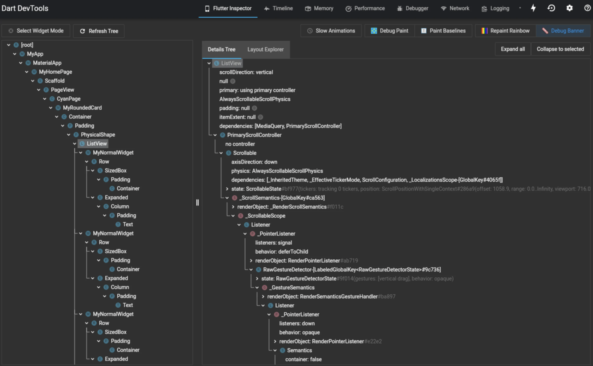

7 个最能用于构造更整洁的 Flutter 应用的 Dart 小贴士和小技巧

Dart 是一门针对客户端进行了优化的编程语言，专门用于快速地构建移动端、桌面端和服务端应用程序。Dart 由 Google 开发，并与 Google 的跨平台框架 Flutter 相互搭配。借助 Flutter 和 Dart，我们可以构建具有流畅 UI 和原生性能的应用程序。
今天，我们总结并分享了七个我们认为最实用的 Dart 技巧，来帮助大家改善应用程序的开发。我们可以使用这些技巧来编写简洁的代码，并充分利用上 Dart 所提供的许多特性。
速览 —— 贴士和技巧：
- 使用匿名函数作为参数
- 使用
call方法让类可以像是个函数一样被调用 - 使用
.entries来在一个 map 上遍历 - 如何使用 getter 和 setter
- 用
Set存储唯一值 - 使用 Inspect 功能
- 使用 sync 和 async 生成器
1. 使用匿名函数作为参数
在 Dart 语言中，我们可以将函数作为参数传递给其他函数，而 Dart 语言本身还支持无需命名即可调用的匿名函数。
以下是 Dart 中使用匿名函数的示例。在本例中，我们将一个匿名的求立方函数传递给内置方法 forEach，尝试获取 list 数组中每一项的立方。
main() {
var list = [1, 2, 3];
list.forEach((item) {
print(item * item * item);
});
}
2. 使用 call 方法让类可以像是个函数一样被调用
使用 Dart 语言我们可以构造一个可调用的类，允许将该类的实例作为函数调用。我们可以用 call() 方法做到这一点,请参见下面的语法：
class class_name {
... // class
return_type call ( parameters ) {
... // 调用这个函数内容
}
}
让我们来看一个例子：
class EducativeIntro {
// 定义 call 方法
String call(String a, String b, String c) => 'Welcome to $a$b$c';
}
// 主函数
void main() {
var educative_input = EducativeIntro();
// 借助实例调用这个类
var educative_output = educative_input('our ', 'Dart ', 'tutorial');
print(educative_output);
}
注意： Dart 不支持多个可调用方法
3. 使用 .entries 来在一个 map 上遍历
在 Dart 中我们可以使用 entries() 方法以空安全的方式遍历一张 map。假设我们现在有一张 map 用于追踪在不同产品上花费的金额（通常我们会使用 ! 运算符在此 map 中进行遍历）：
for (var key in moneySpent.keys) {
final value = moneySpent[key]!;
print('$key: $value');
}
我们可以改进此代码，并使用循环使其更安全。当我们使用 entries 变量进行遍历时，我们可以用空安全的方式访问键值对。
for (var entry in moneySpent.entries) {
// 使用键值对做一些事情
print('${entry.key}: ${entry.value}');
}
4. 如何使用 getter 和 setter
getter 和 setter 是一对特殊的方法，它们能够对一个对象的属性进行读、写操作。我们对 getter 和 setter 的调用类似于实例变量：点运算符（.）后面紧跟函数的名称。
getter 是用于获取对象属性值的函数，使用 get 关键字定义。
在下面的示例中，我们在第 13 行创建了一个 getter 函数，返回当前实例的 name 属性的值。而在第 21 行，我们调用了 getter 函数，这里的输出应是 Sarah。
class Person {
String name;
String gender;
int age;
Person(this.name, this.gender, this.age);
Person.newBorn(){
this.age = 0;
}
// getter 函数，获取 name 的值
String get personName => name;
walking() => print('$name is walking');
talking() => print('$name is talking');
}
int main() {
var firstPerson = Person("Sarah", "Female", 25);
print(firstPerson.personName);
}
setter 则是用于写入一个对象的属性的函数，使用 set 关键词：
class Person {
String name;
String gender;
int age;
String get personName => name;
// setter 函数用于设置 age 的值
void set personAge(num val) {
if (val < 0) {
print("Age cannot be negative");
} else {
this.age = val;
}
}
walking() => print('$name is walking');
talking() => print('$name is talking');
}
int main() {
var firstPerson = Person();
firstPerson.personAge = -5;
print(firstPerson.age);
}
第 9 行到第 15 行代码中我们创建了一个 setter 函数用于设置 age 的值。该函数还被添加了一个条件判断，让我们不能输入负的年龄。在第 23 行，我们使用 personAge setter 函数为 firstPerson 设置了年龄值。
用 Set 存储唯一值
列表是 Dart 中最常见的集合类型之一，但是列表可以容纳重复项。有时我们只想要唯一值的集合，这就是 Set 用武之处。
final countriesSet = {
'USA',
'India',
'Iceland',
'USA',
};
在一个 Set 中两个元素不能相同，因此上面的代码会有一个 warning 并且无法被编译。同理使用 const set 也无法被编译。
6. 使用 Inspect 功能
在网络开发中我们经常会需要用到 Inspect 功能，因为它能够告诉我们应用于 HTML 标记的所有属性。Dart 也提供了类似的功能，我们称之为 Flutter Inspect。这个功能可以有效简化 Flutter 应用程序的开发，用于找到屏幕上的任何控件并查看应用于它的属性。
Inspect 还可以帮助我们可视化 Flutter 控件树以了解布局或确定布局问题。
要使用它，请按照下列步骤操作：
- 单击
Flutter Inspector。 - 单击
启用选择 Widget 模式。 - 选择屏幕上的控件以获取更多信息

7. 使用 Sync 和 Async 生成器
在 Dart 中，生成器可以生成一系列值。而 Dart 一共有两个生成器函数：
- 同步生成器： 返回一个可迭代的对象
- 异步生成器： 返回
Stream对象
换句话说，同步生成器返回可以顺序访问的值的集合。为此，我们将函数体标记为 sync*。我们会以 yield 语句用作值。
Iterable<int> count(int n) sync* {
for (var i = 1; i <= n; i++) {
yield i;
}
}
异步生成器则会返回一个 Stream 对象，让接收一系列事件成为可能。我们可以通过将函数体标记为 async* 来做到这一点。我们会以 yield 语句用作值。
Stream<int> countStream(int n) async* {
for (var i = 1; i <= n; i++) {
yield i;
}
}
你下一步将学习什么？
我们希望这些技巧能帮助您充分利用 Dart 及其提供的所有特性。Flutter 和 Dart 是一套强大的工具，用于构建具有原生感和流畅感的应用程序。接下来要研究的其他高级的 Dart 特性应该是：
- 嵌套
if语句的传播运算符 - 命名构造函数和初始化列表
- Dart 库
- 枚举类型
学习愉快！
如果发现译文存在错误或其他需要改进的地方，欢迎到 掘金翻译计划 对译文进行修改并 PR，也可获得相应奖励积分。文章开头的 本文永久链接 即为本文在 GitHub 上的 MarkDown 链接。
掘金翻译计划 是一个翻译优质互联网技术文章的社区，文章来源为 掘金 上的英文分享文章。内容覆盖 Android、iOS、前端、后端、区块链、产品、设计、人工智能等领域，想要查看更多优质译文请持续关注 掘金翻译计划、官方微博、知乎专栏。